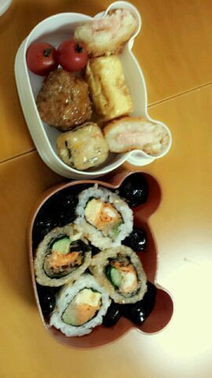
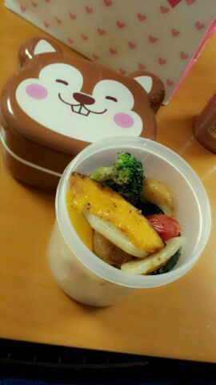

| 2012/11 04 Sun | 川村真洋 乃木ここ。とせーらとのこと。ろ ってぃ-だよぉ♪´∀` )) |
やあ ( ・∀・)ノ♪
Rottyだよ☆
ベッドの隣の
タンスさんの匂いを
かいでみたよ(*・ω・*)
goo !! 良い匂い ))
乃木ここが
見れないんだよぉ〜
表示されない。 ´`
だから、メンバーに
見せてもらおうかなあ〜*^^*
誰に頼むでしょう?わら
乃木ここ。で皆は
見たかな?
ろってぃ-弁当 * ´ω` *

大好きな黒豆様を
ご飯の間にうめた。☆
黒くてピカーンッ☆!!って
めっちゃ光る、
かわい過ぎる(・ω・))
この可愛さ
伝わるかなあ´・ω・?笑
後, 野菜。
キャベツの上に
色々のせてやったよ。
ワー =・ω・=

カラフルで かわいくなるかなあ?
と思って*^^*
ほんで、この写メが
ロケ始まる前に
ロケバスで 撮ったものだあ〜。
...
前髪 作る前だね ^^
そしてねっ、)))
つい最近
アンダーメンバーで
お昼 ,ご飯に行ったのね♪
その時の話するね。
畠中せいら★がおもしろいの^ω^))
あんなあ、
まひろが頼んだスパゲッティが
(キャベツとアンチョビ)の
スパゲッティで
飾りに 唐辛子が一本
のっかってたのね、
それを冗談で、
「負けた人これ食べよーや☆」
って言おうと......する前にっ 笑
せーらが
まひろの手からとって
パクっ て口んなか入れて
モグモグしてんのよっ )))
とりあえず、真顔で食べてる
せーらを様子見してて
『 あれ?からないんかなあ。』
思いつつ、
少し時間がたってから
「ちょー からいんやけど^^
胃 いてぇ ><!」
って言いだして
きずくんおそいわっ^ω^))
ってな感じで
わらったよ。 ・_・))ノ笑
「食べたもん全部
燃やしてくれんちゃう。」
言いつつ、
この話は終わって、
皆で色々 お話してたら
せーらが 鳩胸って言いたかったんやろな(・ω・)
「はとちち、はとちち...?」
とかゆーねん´∀` ))
本間うけた。
はとちちって...
おもろいわぁ〜(*^^*)
ってな感じで
お仕事の合間を使って
blog更新だあー・∀・))
★☆☆★
４日位 更新できてなかった>_<
だから、 明日か明後日また
更新するねっ*^^*)ノ
引き続き お仕事
がんばりますっ )))
のし。